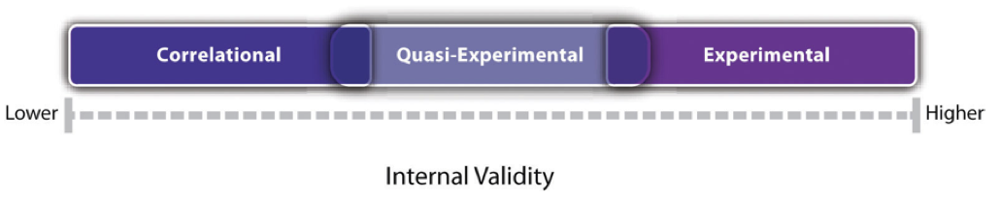
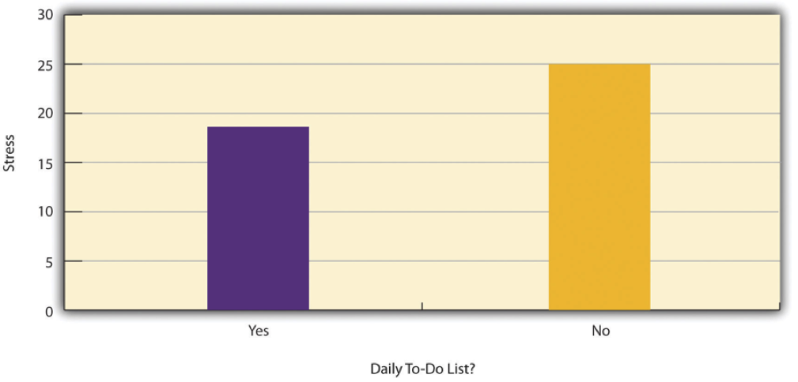
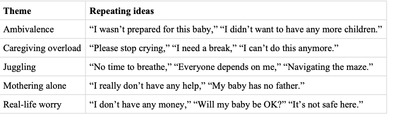

9 Nonexperimental Research
The commonality between science and art is in trying to see profoundly, to develop strategies of seeing and showing —Edward Tufte
What do the following classic studies have in common?
Stanley Milgram found that about two thirds of his research participants were willing to administer dangerous shocks to another person just because they were told to by an authority figure (Milgram 1963).
Elizabeth Loftus and Jacqueline Pickrell showed that it is relatively easy to “implant” false memories in people by repeatedly asking them about childhood events that did not actually happen to them (Loftus and Pickrell 1995).
John Cacioppo and Richard Petty evaluated the validity of their Need for Cognition Scale—a measure of the extent to which people like and value thinking—by comparing the scores of university professors with those of factory workers (Cacioppo and Petty 1982).
David Rosenhan found that confederates who went to psychiatric hospitals claiming to have heard voices saying things like “empty” and “thud” were labeled as schizophrenic by the hospital staff and kept there even though they behaved normally in all other ways (Rosenhan 1973).
The answer for purposes of this chapter is that they are not experiments. In this chapter we look more closely at non- experimental research. We begin with a general definition of non-experimental research, along with a discussion of when and why non-experimental research is more appropriate than experimental research. We then look separately at three important types of non-experimental research: correlational research, quasi-experimental research, and qualitative research.
Overview of Non-experimental Research
Learning Objectives
- Define non-experimental research, distinguish it clearly from experimental research, and give several examples.
- Explain when a researcher might choose to conduct non-experimental research as opposed to experimental research.
What Is Non-experimental Research?
Non-experimental research is research that lacks the manipulation of an independent variable, random assignment of participants to conditions or orders of conditions, or both.
In a sense, it is unfair to define this large and diverse set of approaches collectively by what they are not. But doing so reflects the fact that most researchers in psychology consider the distinction between experimental and non-experimental research to be an extremely important one. This distinction is because although experimental research can provide strong evidence that changes in an independent variable cause differences in a dependent variable, non-experimental research generally cannot. As we will see, however, this inability does not mean that non-experimental research is less important than experimental research or inferior to it in any general sense.
When to Use Non-experimental Research
As we saw in Chapter 6, experimental research is appropriate when the researcher has a specific research question or hypothesis about a causal relationship between two variables—and it is possible, feasible, and ethical to manipulate the independent variable and randomly assign participants to conditions or to orders of conditions. It stands to reason, therefore, that non-experimental research is appropriate—even necessary—when these conditions are not met. There are many ways in which preferring non-experimental research can be the case.
The research question or hypothesis can be about a single variable rather than a statistical relationship between two variables (e.g., How accurate are people’s first impressions?).
The research question can be about a non-causal statistical relationship between variables (e.g., Is there a correlation between verbal intelligence and mathematical intelligence?).
The research question can be about a causal relationship, but the independent variable cannot be manipulated or participants cannot be randomly assigned to conditions or orders of conditions (e.g., Does damage to a person’s hippocampus impair the formation of long-term memory traces?).
The research question can be broad and exploratory, or it can be about what it is like to have a particular experience (e.g., What is it like to be a working mother diagnosed with depression?).
Again, the choice between the experimental and non-experimental approaches is generally dictated by the nature of the research question. If it is about a causal relationship and involves an independent variable that can be manipulated, the experimental approach is typically preferred. Otherwise, the non-experimental approach is preferred. But the two approaches can also be used to address the same research question in complementary ways. For example, non-experimental studies establishing that there is a relationship between watching violent television and aggressive behavior have been complemented by experimental studies confirming that the relationship is a causal one (Bushman and Huesmann 2001). Similarly, after his original study, Milgram conducted experiments to explore the factors that affect obedience. He manipulated several independent variables, such as the distance between the experimenter and the participant, the participant and the confederate, and the location of the study Milgram (1974).
Types of Non-experimental Research
Non-experimental research falls into three broad categories: single-variable research, correlational and quasi- experimental research, and qualitative research. First, research can be non-experimental because it focuses on a single variable rather than a statistical relationship between two variables. Although there is no widely shared term for this kind of research, we will call it single-variable research. Milgram’s original obedience study was non- experimental in this way. He was primarily interested in one variable—the extent to which participants obeyed the researcher when he told them to shock the confederate—and he observed all participants performing the same task under the same conditions. The study by Loftus and Pickrell described at the beginning of this chapter is also a good example of single-variable research. The variable was whether participants “remembered” having experienced mildly traumatic childhood events (e.g., getting lost in a shopping mall) that they had not actually experienced but that the research asked them about repeatedly. In this particular study, nearly a third of the participants “remembered” at least one event. (As with Milgram’s original study, this study inspired several later experiments on the factors that affect false memories.)
As these examples make clear, single-variable research can answer interesting and important questions. What it cannot do, however, is answer questions about statistical relationships between variables. This detail is a point that beginning researchers sometimes miss. Imagine, for example, a group of research methods students interested in the relationship between children’s being the victim of bullying and the children’s self-esteem. The first thing that is likely to occur to these researchers is to obtain a sample of middle-school students who have been bullied and then to measure their self-esteem. But this design would be a single-variable study with self-esteem as the only variable. Although it would tell the researchers something about the self-esteem of children who have been bullied, it would not tell them what they really want to know, which is how the self-esteem of children who have been bullied compares with the self-esteem of children who have not. Is it lower? Is it the same? Could it even be higher? To answer this question, their sample would also have to include middle-school students who have not been bullied thereby introducing another variable.
Research can also be non-experimental because it focuses on a statistical relationship between two variables but does not include the manipulation of an independent variable, random assignment of participants to conditions or orders of conditions, or both. This kind of research takes two basic forms: correlational research and quasi- experimental research. In correlational research, the researcher measures the two variables of interest with little or no attempt to control extraneous variables and then assesses the relationship between them. A research methods student who finds out whether each of several middle-school students has been bullied and then measures each student’s self-esteem is conducting correlational research. In quasi-experimental research, the researcher manipulates an independent variable but does not randomly assign participants to conditions or orders of conditions. For example, a researcher might start an antibullying program (a kind of treatment) at one school and compare the incidence of bullying at that school with the incidence at a similar school that has no antibullying program.
The final way in which research can be nonexperimental is that it can be qualitative. The types of research we have discussed so far are all quantitative, referring to the fact that the data consist of numbers that are analyzed using statistical techniques. In qualitative research, the data are usually nonnumerical and therefore cannot be analyzed using statistical techniques. Rosenhan’s study of the experience of people in a psychiatric ward was primarily qualitative. The data were the notes taken by the “pseudopatients”—the people pretending to have heard voices—along with their hospital records. Rosenhan’s analysis consists mainly of a written description of the experiences of the pseudopatients, supported by several concrete examples. To illustrate the hospital staff’s tendency to “depersonalize” their patients, he noted, “Upon being admitted, I and other pseudopatients took the initial physical examinations in a semipublic room, where staff members went about their own business as if we were not there” (Rosenhan 1973). Qualitative data has a separate set of analysis tools depending on the research question. For example, thematic analysis would focus on themes that emerge in the data or conversation analysis would focus on the way the words were said in an interview or focus group.
Internal Validity Revisited
Recall that internal validity is the extent to which the design of a study supports the conclusion that changes in the independent variable caused any observed differences in the dependent variable. Figure Figure 1 shows how experimental, quasi-experimental, and correlational research vary in terms of internal validity. Experimental research tends to be highest because it addresses the directionality and third-variable problems through manipulation and the control of extraneous variables through random assignment. If the average score on the dependent variable in an experiment differs across conditions, it is quite likely that the independent variable is responsible for that difference. Correlational research is lowest because it fails to address either problem. If the average score on the dependent variable differs across levels of the independent variable, it could be that the independent variable is responsible, but there are other interpretations. In some situations, the direction of causality could be reversed. In others, there could be a third variable that is causing differences in both the independent and dependent variables. Quasi-experimental research is in the middle because the manipulation of the independent variable addresses some problems, but the lack of random assignment and experimental control fails to address others. Imagine, for example, that a researcher finds two similar schools, starts an antibullying program in one, and then finds fewer bullying incidents in that “treatment school” than in the “control school.” There is no directionality problem because clearly the number of bullying incidents did not determine which school got the program. However, the lack of random assignment of children to schools could still mean that students in the treatment school differed from students in the control school in some other way that could explain the difference in bullying.
Notice also in Figure Figure 1 that there is some overlap in the internal validity of experiments, quasi-experiments, and correlational studies. For example, a poorly designed experiment that includes many confounding variables can be lower in internal validity than a well designed quasi-experiment with no obvious confounding variables. Internal validity is also only one of several validities that one might consider, as noted in Chapter 5.
Key Takeaways
Non-experimental research is research that lacks the manipulation of an independent variable, control of extraneous variables through random assignment, or both.
There are three broad types of non-experimental research. Single-variable research focuses on a single variable rather than a relationship between variables. Correlational and quasi-experimental research focus on a statistical relationship but lack manipulation or random assignment. Qualitative research focuses on broader research questions, typically involves collecting large amounts of data from a small number of participants, and analyses the data non-statistically.
In general, experimental research is high in internal validity, correlational research is low in internal validity, and quasi-experimental research is in between.
Exercises
Discussion: For each of the following studies, decide which type of research design it is and explain why.
A researcher conducts detailed interviews with unmarried teenage fathers to learn about how they feel and what they think about their role as fathers and summarizes their feelings in a written narrative.
A researcher measures the impulsivity of a large sample of drivers and looks at the statistical relationship between this variable and the number of traffic tickets the drivers have received.
A researcher randomly assigns patients with low back pain either to a treatment involving hypnosis or to a treatment involving exercise. She then measures their level of low back pain after 3 months.
A college instructor gives weekly quizzes to students in one section of his course but no weekly quizzes to students in another section to see whether this has an effect on their test performance.
Correlational Research
Learning Objectives
- Define correlational research and give several examples.
- Explain why a researcher might choose to conduct correlational research rather than experimental research or another type of non-experimental research.
What Is Correlational Research?
Correlational research is a type of non-experimental research in which the researcher measures two variables and assesses the statistical relationship (i.e., the correlation) between them with little or no effort to control extraneous variables. There are essentially two reasons that researchers interested in statistical relationships between variables would choose to conduct a correlational study rather than an experiment. The first is that they do not believe that the statistical relationship is a causal one. For example, a researcher might evaluate the validity of a brief extraversion test by administering it to a large group of participants along with a longer extraversion test that has already been shown to be valid. This researcher might then check to see whether participants’ scores on the brief test are strongly correlated with their scores on the longer one. Neither test score is thought to cause the other, so there is no independent variable to manipulate. In fact, the terms independent variable and dependent variable do not apply to this kind of research.
The other reason that researchers would choose to use a correlational study rather than an experiment is that the statistical relationship of interest is thought to be causal, but the researcher cannot manipulate the independent variable because it is impossible, impractical, or unethical. For example, Allen Kanner and his colleagues thought that the number of “daily hassles” (e.g., rude salespeople, heavy traffic) that people experience affects the number of physical and psychological symptoms they have (Kanner et al. 1981). But because they could not manipulate the number of daily hassles their participants experienced, they had to settle for measuring the number of daily hassles—along with the number of symptoms—using self-report questionnaires. Although the strong positive relationship they found between these two variables is consistent with their idea that hassles cause symptoms, it is also consistent with the idea that symptoms cause hassles or that some third variable (e.g., neuroticism) causes both.
A common misconception among beginning researchers is that correlational research must involve two quantitative variables, such as scores on two extraversion tests or the number of hassles and number of symptoms people have experienced. However, the defining feature of correlational research is that the two variables are measured—neither one is manipulated—and this is true regardless of whether the variables are quantitative or categorical. Imagine, for example, that a researcher administers the Rosenberg Self-Esteem Scale to 50 American university students and 50 Japanese university students. Although this “feels” like a between-subjects experiment, it is a correlational study because the researcher did not manipulate the students’ nationalities. The same is true of the study by Cacioppo and Petty comparing professors and factory workers in terms of their need for cognition. It is a correlational study because the researchers did not manipulate the participants’ occupations.

Figure Figure 2 shows data from a hypothetical study on the relationship between whether people make a daily list of things to do (a “to-do list”) and stress. Notice that it is unclear whether this design is an experiment or a correlational study because it is unclear whether the independent variable was manipulated. If the researcher randomly assigned some participants to make daily to-do lists and others not to, then it is an experiment. If the researcher simply asked participants whether they made daily to-do lists, then it is a correlational study. The distinction is important because if the study was an experiment, then it could be concluded that making the daily to-do lists reduced participants’ stress. But if it was a correlational study, it could only be concluded that these variables are related. Perhaps being stressed has a negative effect on people’s ability to plan ahead (the directionality problem). Or perhaps people who are more conscientious are more likely to make to-do lists and less likely to be stressed (the third-variable problem). The crucial point is that what defines a study as experimental or correlational is not the variables being studied, nor whether the variables are quantitative or categorical, nor the type of graph or statistics used to analyze the data. It is how the study is conducted.
Data Collection in Correlational Research
Again, the defining feature of correlational research is that neither variable is manipulated. It does not matter how or where the variables are measured. A researcher could have participants come to a laboratory to complete a computerized backward digit span task and a computerized risky decision-making task and then assess the relationship between participants’ scores on the two tasks. Or a researcher could go to a shopping mall to ask people about their attitudes toward the environment and their shopping habits and then assess the relationship between these two variables. Both of these studies would be correlational because no independent variable is manipulated. However, because some approaches to data collection are strongly associated with correlational research, it makes sense to discuss them here. The two we will focus on are naturalistic observation and archival data. A third, survey research, is discussed in its own chapter, Chapter 10.
Naturalistic Observation
Naturalistic observation is an approach to data collection that involves observing people’s behavior in the environment in which it typically occurs. Thus naturalistic observation is a type of field research (as opposed to a type of laboratory research). It could involve observing shoppers in a grocery store, children on a school playground, or psychiatric inpatients in their wards. Researchers engaged in naturalistic observation usually make their observations as unobtrusively as possible so that participants are often not aware that they are being studied. Ethically, this method is considered to be acceptable if the participants remain anonymous and the behavior occurs in a public setting where people would not normally have an expectation of privacy. Grocery shoppers putting items into their shopping carts, for example, are engaged in public behavior that is easily observable by store employees and other shoppers. For this reason, most researchers would consider it ethically acceptable to observe them for a study. On the other hand, one of the arguments against the ethicality of the naturalistic observation of “bathroom behaviour” discussed earlier in the book is that people have a reasonable expectation of privacy even in a public restroom and that this expectation was violated.
Researchers Robert Levine and Ara Norenzayan used naturalistic observation to study differences in the “pace of life” across countries (Levine and Norenzayan 1999). One of their measures involved observing pedestrians in a large city to see how long it took them to walk 60 feet. They found that people in some countries walked reliably faster than people in other countries. For example, people in Canada and Sweden covered 60 feet in just under 13 seconds on average, while people in Brazil and Romania took close to 17 seconds.
Because naturalistic observation takes place in the complex and even chaotic “real world,” there are two closely related issues that researchers must deal with before collecting data. The first is sampling. When, where, and under what conditions will the observations be made, and who exactly will be observed? Levine and Norenzayan described their sampling process as follows:
“Male and female walking speed over a distance of 60 feet was measured in at least two locations in main downtown areas in each city. Measurements were taken during main business hours on clear summer days. All locations were flat, unobstructed, had broad sidewalks, and were sufficiently uncrowded to allow pedestrians to move at potentially maximum speeds. To control for the effects of socializing, only pedestrians walking alone were used. Children, individuals with obvious physical handicaps, and window-shoppers were not timed. Thirty-five men and 35 women were timed in most cities.” (p. 186)
Precise specification of the sampling process in this way makes data collection manageable for the observers, and it also provides some control over important extraneous variables. For example, by making their observations on clear summer days in all countries, Levine and Norenzayan controlled for effects of the weather on people’s walking speeds.
The second issue is measurement. What specific behaviours will be observed? In Levine and Norenzayan’s study, measurement was relatively straightforward. They simply measured out a 60-foot distance along a city sidewalk and then used a stopwatch to time participants as they walked over that distance. Often, however, the behaviors of interest are not so obvious or objective. For example, researchers Robert Kraut and Robert Johnston wanted to study bowlers’ reactions to their shots, both when they were facing the pins and then when they turned toward their companions (Kraut and Johnston 1979). But what “reactions” should they observe? Based on previous research and their own pilot testing, Kraut and Johnston created a list of reactions that included “closed smile,” “open smile,” “laugh,” “neutral face,” “look down,” “look away,” and “face cover” (covering one’s face with one’s hands). The observers committed this list to memory and then practiced by coding the reactions of bowlers who had been videotaped. During the actual study, the observers spoke into an audio recorder, describing the reactions they observed. Among the most interesting results of this study was that bowlers rarely smiled while they still faced the pins. They were much more likely to smile after they turned toward their companions, suggesting that smiling is not purely an expression of happiness but also a form of social communication.
When the observations require a judgment on the part of the observers—as in Kraut and Johnston’s study—this process is often described as coding. Coding generally requires clearly defining a set of target behaviors. The observers then categorize participants individually in terms of which behavior they have engaged in and the number of times they engaged in each behavior. The observers might even record the duration of each behavior. The target behaviors must be defined in such a way that different observers code them in the same way. This difficulty with coding is the issue of interrater reliability, as mentioned in Chapter 5. Researchers are expected to demonstrate the interrater reliability of their coding procedure by having multiple raters code the same behaviors independently and then showing that the different observers are in close agreement. Kraut and Johnston, for example, video recorded a subset of their participants’ reactions and had two observers independently code them. The two observers showed that they agreed on the reactions that were exhibited 97% of the time, indicating good interrater reliability.
Archival Data
Another approach to correlational research is the use of archival data, which are data that have already been collected for some other purpose. An example is a study by Brett Pelham and his colleagues on “implicit egotism”—the tendency for people to prefer people, places, and things that are similar to themselves (Pelham, Carvallo, and Jones 2005). In one study, they examined Social Security records to show that women with the names Virginia, Georgia, Louise, and Florence were especially likely to have moved to the states of Virginia, Georgia, Louisiana, and Florida, respectively.
As with naturalistic observation, measurement can be more or less straightforward when working with archival data. For example, counting the number of people named Virginia who live in various states based on Social Security records is relatively straightforward. But consider a study by Christopher Peterson and his colleagues on the relationship between optimism and health using data that had been collected many years before for a study on adult development (Peterson, Seligman, and Vaillant 1988). In the 1940s, healthy male college students had completed an open-ended questionnaire about difficult wartime experiences. In the late 1980s, Peterson and his colleagues reviewed the men’s questionnaire responses to obtain a measure of explanatory style—their habitual ways of explaining bad events that happen to them. More pessimistic people tend to blame themselves and expect long-term negative consequences that affect many aspects of their lives, while more optimistic people tend to blame outside forces and expect limited negative consequences. To obtain a measure of explanatory style for each participant, the researchers used a procedure in which all negative events mentioned in the questionnaire responses, and any causal explanations for them, were identified and written on index cards. These were given to a separate group of raters who rated each explanation in terms of three separate dimensions of optimism-pessimism. These ratings were then averaged to produce an explanatory style score for each participant. The researchers then assessed the statistical relationship between the men’s explanatory style as undergraduate students and archival measures of their health at approximately 60 years of age. The primary result was that the more optimistic the men were as undergraduate students, the healthier they were as older men. Pearson’s r was +.25.
This method is an example of content analysis—a family of systematic approaches to measurement using complex archival data. Just as naturalistic observation requires specifying the behaviors of interest and then noting them as they occur, content analysis requires specifying keywords, phrases, or ideas and then finding all occurrences of them in the data. These occurrences can then be counted, timed (e.g., the amount of time devoted to entertainment topics on the nightly news show), or analyzed in a variety of other ways.
Key Takeaways
Correlational research involves measuring two variables and assessing the relationship between them, with no manipulation of an independent variable.
Correlational research is not defined by where or how the data are collected. However, some approaches to data collection are strongly associated with correlational research. These include naturalistic observation (in which researchers observe people’s behavior in the context in which it normally occurs) and the use of archival data that were already collected for some other purpose.
Exercises
Discussion: For each of the following, decide whether it is most likely that the study described is experimental or correlational and explain why.
An educational researcher compares the academic performance of students from the “rich”” side of town with that of students from the “poor”” side of town.
A cognitive psychologist compares the ability of people to recall words that they were instructed to “read” with their ability to recall words that they were instructed to “imagine.”
A manager studies the correlation between new employees’ college grade point averages and their first-year performance reports.
An automotive engineer installs different stick shifts in a new car prototype, each time asking several people to rate how comfortable the stick shift feels.
A food scientist studies the relationship between the temperature inside people’s refrigerators and the amount of bacteria on their food.
A social psychologist tells some research participants that they need to hurry over to the next building to complete a study. She tells others that they can take their time. Then she observes whether they stop to help a research assistant who is pretending to be hurt.
Quasi-Experimental Research
Learning Objectives
- Explain what quasi-experimental research is and distinguish it clearly from both experimental and correlational research.
- Describe three different types of quasi-experimental research designs (nonequivalent groups, pretest-posttest, and interrupted time series) and identify examples of each one.
The prefix quasi means “resembling.” Thus quasi-experimental research is research that resembles experimental research but is not true experimental research. Although the independent variable is manipulated, participants are not randomly assigned to conditions or orders of conditions (Cook, Campbell, and Day 1979). Because the independent variable is manipulated before the dependent variable is measured, quasi-experimental research eliminates the directionality problem. But because participants are not randomly assigned—making it likely that there are other differences between conditions—quasi-experimental research does not eliminate the problem of confounding variables. In terms of internal validity, therefore, quasi-experiments are generally somewhere between correlational studies and true experiments.
Quasi-experiments are most likely to be conducted in field settings in which random assignment is difficult or impossible. They are often conducted to evaluate the effectiveness of a treatment—perhaps a type of psychotherapy or an educational intervention. There are many different kinds of quasi-experiments, but we will discuss just a few of the most common ones here.
Nonequivalent Groups Design
Recall that when participants in a between-subjects experiment are randomly assigned to conditions, the resulting groups are likely to be quite similar. In fact, researchers consider them to be equivalent. When participants are not randomly assigned to conditions, however, the resulting groups are likely to be dissimilar in some ways. For this reason, researchers consider them to be nonequivalent. A nonequivalent groups design, then, is a between-subjects design in which participants have not been randomly assigned to conditions.
Imagine, for example, a researcher who wants to evaluate a new method of teaching fractions to third graders. One way would be to conduct a study with a treatment group consisting of one class of third-grade students and a control group consisting of another class of third-grade students. This design would be a nonequivalent groups design because the students are not randomly assigned to classes by the researcher, which means there could be important differences between them. For example, the parents of higher achieving or more motivated students might have been more likely to request that their children be assigned to Ms. Williams’s class. Or the principal might have assigned the “troublemakers” to Mr. Jones’s class because he is a stronger disciplinarian. Of course, the teachers’ styles, and even the classroom environments, might be very different and might cause different levels of achievement or motivation among the students. If at the end of the study there was a difference in the two classes’ knowledge of fractions, it might have been caused by the difference between the teaching methods—but it might have been caused by any of these confounding variables.
Of course, researchers using a nonequivalent groups design can take steps to ensure that their groups are as similar as possible. In the present example, the researcher could try to select two classes at the same school, where the students in the two classes have similar scores on a standardized math test and the teachers are the same sex, are close in age, and have similar teaching styles. Taking such steps would increase the internal validity of the study because it would eliminate some of the most important confounding variables. But without true random assignment of the students to conditions, there remains the possibility of other important confounding variables that the researcher was not able to control.
Pretest-Posttest Design
In a pretest-posttest design, the dependent variable is measured once before the treatment is implemented and once after it is implemented. Imagine, for example, a researcher who is interested in the effectiveness of an antidrug education program on elementary school students’ attitudes toward illegal drugs. The researcher could measure the attitudes of students at a particular elementary school during one week, implement the antidrug program during the next week, and finally, measure their attitudes again the following week. The pretest-posttest design is much like a within-subjects experiment in which each participant is tested first under the control condition and then under the treatment condition. It is unlike a within-subjects experiment, however, in that the order of conditions is not counterbalanced because it typically is not possible for a participant to be tested in the treatment condition first and then in an “untreated” control condition.
If the average posttest score is better than the average pretest score, then it makes sense to conclude that the treatment might be responsible for the improvement. Unfortunately, one often cannot conclude this with a high degree of certainty because there may be other explanations for why the posttest scores are better. One category of alternative explanations goes under the name of history. Other things might have happened between the pretest and the posttest. Perhaps an antidrug program aired on television and many of the students watched it, or perhaps a celebrity died of a drug overdose and many of the students heard about it.
Another category of alternative explanations goes under the name of maturation. Participants might have changed between the pretest and the posttest in ways that they were going to anyway because they are growing and learning. If it were a yearlong program, participants might become less impulsive or better reasoners and this might be responsible for the change.
Another alternative explanation for a change in the dependent variable in a pretest-posttest design is regression to the mean. This refers to the statistical fact that an individual who scores extremely on a variable on one occasion will tend to score less extremely on the next occasion. For example, a bowler with a long-term average of 150 who suddenly bowls a 220 will almost certainly score lower in the next game. Her score will “regress” toward her mean score of 150. Regression to the mean can be a problem when participants are selected for further study because of their extreme scores. Imagine, for example, that only students who scored especially low on a test of fractions are given a special training program and then retested. Regression to the mean all but guarantees that their scores will be higher even if the training program has no effect. A closely related concept—and an extremely important one in psychological research—is spontaneous remission. This is the tendency for many medical and psychological problems to improve over time without any form of treatment. The common cold is a good example. If one were to measure symptom severity in 100 common cold sufferers today, give them a bowl of chicken soup every day, and then measure their symptom severity again in a week, they would probably be much improved. This does not mean that the chicken soup was responsible for the improvement, however, because they would have been much improved without any treatment at all. The same is true of many psychological problems. A group of severely depressed people today is likely to be less depressed on average in 6 months. In reviewing the results of several studies of treatments for depression, researchers Michael Posternak and Ivan Miller found that participants in waitlist control conditions improved an average of 10 to 15% before they received any treatment at all (Posternak and Miller 2001). Thus one must generally be very cautious about inferring causality from pretest-posttest designs.
Early studies on the effectiveness of psychotherapy tended to use pretest-posttest designs. In a classic 1952 article, researcher Hans Eysenck summarized the results of 24 such studies showing that about two thirds of patients improved between the pretest and the posttest (Eysenck, 1952)3. But Eysenck also compared these results with archival data from state hospital and insurance company records showing that similar patients recovered at about the same rate without receiving psychotherapy. This parallel suggested to Eysenck that the improvement that patients showed in the pretest-posttest studies might be no more than spontaneous remission. Note that Eysenck did not conclude that psychotherapy was ineffective. He merely concluded that there was no evidence that it was, and he wrote of “the necessity of properly planned and executed experimental studies into this important field” (p. 323). You can read the entire article here:
http://psychclassics.yorku.ca/Eysenck/psychotherapy.htm
Fortunately, many other researchers took up Eysenck’s challenge, and by 1980 hundreds of experiments had been conducted in which participants were randomly assigned to treatment and control conditions, and the results were summarized in a classic book by Mary Lee Smith, Gene Glass, and Thomas Miller (Smith, Glass, and Miller 1980). They found that overall psychotherapy was quite effective, with about 80% of treatment participants improving more than the average control participant. Subsequent research has focused more on the conditions under which different types of psychotherapy are more or less effective.
Interrupted Time Series Design
A variant of the pretest-posttest design is the interrupted time-series design. A time series is a set of measurements taken at intervals over a period of time. For example, a manufacturing company might measure its workers’ productivity each week for a year. In an interrupted time series-design, a time series like this one is “interrupted” by a treatment. In one classic example, the treatment was the reduction of the work shifts in a factory from 10 hours to 8 hours (Cook, Campbell, and Day 1979). Because productivity increased rather quickly after the shortening of the work shifts, and because it remained elevated for many months afterward, the researcher concluded that the shortening of the shifts caused the increase in productivity. Notice that the interrupted time-series design is like a pretest-posttest design in that it includes measurements of the dependent variable both before and after the treatment. It is unlike the pretest-posttest design, however, in that it includes multiple pretest and posttest measurements.
Figure Figure 3 shows data from a hypothetical interrupted time-series study. The dependent variable is the number of student absences per week in a research methods course. The treatment is that the instructor begins publicly taking attendance each day so that students know that the instructor is aware of who is present and who is absent.

The top panel of Figure Figure 3 shows how the data might look if this treatment worked. There is a consistently high number of absences before the treatment, and there is an immediate and sustained drop in absences after the treatment. The bottom panel of Figure Figure 3 shows how the data might look if this treatment did not work. On average, the number of absences after the treatment is about the same as the number before. This figure also illustrates an advantage of the interrupted time-series design over a simpler pretest-posttest design. If there had been only one measurement of absences before the treatment at Week 7 and one afterward at Week 8, then it would have looked as though the treatment were responsible for the reduction. The multiple measurements both before and after the treatment suggest that the reduction between Weeks 7 and 8 is nothing more than normal week-to-week variation.
Combination Designs
A type of quasi-experimental design that is generally better than either the nonequivalent groups design or the pretest-posttest design is one that combines elements of both. There is a treatment group that is given a pretest, receives a treatment, and then is given a posttest. But at the same time there is a control group that is given a pretest, does not receive the treatment, and then is given a posttest. The question, then, is not simply whether participants who receive the treatment improve but whether they improve more than participants who do not receive the treatment.
Imagine, for example, that students in one school are given a pretest on their attitudes toward drugs, then are exposed to an antidrug program, and finally are given a posttest. Students in a similar school are given the pretest, not exposed to an antidrug program, and finally are given a posttest. Again, if students in the treatment condition become more negative toward drugs, this change in attitude could be an effect of the treatment, but it could also be a matter of history or maturation. If it really is an effect of the treatment, then students in the treatment condition should become more negative than students in the control condition. But if it is a matter of history (e.g., news of a celebrity drug overdose) or maturation (e.g., improved reasoning), then students in the two conditions would be likely to show similar amounts of change. This type of design does not completely eliminate the possibility of confounding variables, however. Something could occur at one of the schools but not the other (e.g., a student drug overdose), so students at the first school would be affected by it while students at the other school would not. Finally, if participants in this kind of design are randomly assigned to conditions, it becomes a true experiment rather than a quasi experiment. In fact, it is the kind of experiment that Eysenck called for—and that has now been conducted many times—to demonstrate the effectiveness of psychotherapy.
Key Takeaways
Quasi-experimental research involves the manipulation of an independent variable without the random assignment of participants to conditions or orders of conditions. Among the important types are nonequivalent groups designs, pretest-posttest, and interrupted time-series designs.
Quasi-experimental research eliminates the directionality problem because it involves the manipulation of the independent variable. It does not eliminate the problem of confounding variables, however, because it does not involve random assignment to conditions. For these reasons, quasi-experimental research is generally higher in internal validity than correlational studies but lower than true experiments.
Exercises
Practice: Imagine that two professors decide to test the effect of giving daily quizzes on student performance in a statistics course. They decide that Professor A will give quizzes but Professor B will not. They will then compare the performance of students in their two sections on a common final exam. List five other variables that might differ between the two sections that could affect the results.
Discussion: Imagine that a group of obese children is recruited for a study in which their weight is measured, then they participate for 3 months in a program that encourages them to be more active, and finally their weight is measured again. Explain how each of the following might affect the results: a. regression to the mean b. spontaneous remission c. history d. maturation
Qualitative Research
Learning Objectives
- List several ways in which qualitative research differs from quantitative research in psychology.
- Describe the strengths and weaknesses of qualitative research in psychology compared with quantitative research.
- Give examples of qualitative research in psychology.
What Is Qualitative Research?
This textbook is primarily about quantitative research. Quantitative researchers typically start with a focused research question or hypothesis, collect a small amount of data from each of a large number of individuals, describe the resulting data using statistical techniques, and draw general conclusions about some large population. Although this method is by far the most common approach to conducting empirical research in psychology, there is an important alternative called qualitative research. Qualitative research originated in the disciplines of anthropology and sociology but is now used to study many psychological topics as well. Qualitative researchers generally begin with a less focused research question, collect large amounts of relatively “unfiltered” data from a relatively small number of individuals, and describe their data using nonstatistical techniques. They are usually less concerned with drawing general conclusions about human behavior than with understanding in detail the experience of their research participants.
Consider, for example, a study by researcher Per Lindqvist and his colleagues, who wanted to learn how the families of teenage suicide victims cope with their loss (Lindqvist, Johansson, and Karlsson 2008). They did not have a specific research question or hypothesis, such as, What percentage of family members join suicide support groups? Instead, they wanted to understand the variety of reactions that families had, with a focus on what it is like from their perspectives. To address this question, they interviewed the families of 10 teenage suicide victims in their homes in rural Sweden. The interviews were relatively unstructured, beginning with a general request for the families to talk about the victim and ending with an invitation to talk about anything else that they wanted to tell the interviewer. One of the most important themes that emerged from these interviews was that even as life returned to “normal,” the families continued to struggle with the question of why their loved one committed suicide. This struggle appeared to be especially difficult for families in which the suicide was most unexpected.
The Purpose of Qualitative Research
Again, this textbook is primarily about quantitative research in psychology. The strength of quantitative research is its ability to provide precise answers to specific research questions and to draw general conclusions about human behavior. This method is how we know that people have a strong tendency to obey authority figures, for example, or that female undergraduate students are not substantially more talkative than male undergraduate students. But while quantitative research is good at providing precise answers to specific research questions, it is not nearly as good at generating novel and interesting research questions. Likewise, while quantitative research is good at drawing general conclusions about human behavior, it is not nearly as good at providing detailed descriptions of the behavior of particular groups in particular situations. And it is not very good at all at communicating what it is actually like to be a member of a particular group in a particular situation.
But the relative weaknesses of quantitative research are the relative strengths of qualitative research. Qualitative research can help researchers to generate new and interesting research questions and hypotheses. The research of Lindqvist and colleagues, for example, suggests that there may be a general relationship between how unexpected a suicide is and how consumed the family is with trying to understand why the teen committed suicide. This relationship can now be explored using quantitative research. But it is unclear whether this question would have arisen at all without the researchers sitting down with the families and listening to what they themselves wanted to say about their experience. Qualitative research can also provide rich and detailed descriptions of human behavior in the real-world contexts in which it occurs. Among qualitative researchers, this depth is often referred to as “thick description” Geertz (1973). Similarly, qualitative research can convey a sense of what it is actually like to be a member of a particular group or in a particular situation—what qualitative researchers often refer to as the “lived experience” of the research participants. Lindqvist and colleagues, for example, describe how all the families spontaneously offered to show the interviewer the victim’s bedroom or the place where the suicide occurred—revealing the importance of these physical locations to the families. It seems unlikely that a quantitative study would have discovered this detail.
Data Collection and Analysis in Qualitative Research
As with correlational research, data collection approaches in qualitative research are quite varied and can involve naturalistic observation, archival data, artwork, and many other things. But one of the most common approaches, especially for psychological research, is to conduct interviews. Interviews in qualitative research can be unstructured—consisting of a small number of general questions or prompts that allow participants to talk about what is of interest to them–or structured, where there is a strict script that the interviewer does not deviate from. Most interviews are in between the two and are called semi-structured interviews, where the researcher has a few consistent questions and can follow up by asking more detailed questions about the topics that do come up. Such interviews can be lengthy and detailed, but they are usually conducted with a relatively small sample. The unstructured interview was the approach used by Lindqvist and colleagues in their research on the families of suicide survivors because the researchers were aware that how much was disclosed about such a sensitive topic should be led by the families not by the researchers. Small groups of people who participate together in interviews focused on a particular topic or issue are often referred to as focus groups. The interaction among participants in a focus group can sometimes bring out more information than can be learned in a one-on-one interview. The use of focus groups has become a standard technique in business and industry among those who want to understand consumer tastes and preferences. The content of all focus group interviews is usually recorded and transcribed to facilitate later analyses. However, we know from social psychology that group dynamics are often at play in any group, including focus groups, and it is useful to be aware of those possibilities.
Another approach to data collection in qualitative research is participant observation. In participant observation, researchers become active participants in the group or situation they are studying. The data they collect can include interviews (usually unstructured), their own notes based on their observations and interactions, documents, photographs, and other artifacts. The basic rationale for participant observation is that there may be important information that is only accessible to, or can be interpreted only by, someone who is an active
participant in the group or situation. An example of participant observation comes from a study by sociologist Amy Wilkins (published in Social Psychology Quarterly) on a university-based religious organization that emphasized how happy its members were (Wilkins 2008). Wilkins spent 12 months attending and participating in the group’s meetings and social events, and she interviewed several group members. In her study, Wilkins identified several ways in which the group “enforced” happiness—for example, by continually talking about happiness, discouraging the expression of negative emotions, and using happiness as a way to distinguish themselves from other groups.
Data Analysis in Qualitative Research
Although quantitative and qualitative research generally differ along several important dimensions (e.g., the specificity of the research question, the type of data collected), it is the method of data analysis that distinguishes them more clearly than anything else. To illustrate this idea, imagine a team of researchers that conducts a series of unstructured interviews with recovering alcoholics to learn about the role of their religious faith in their recovery. Although this project sounds like qualitative research, imagine further that once they collect the data, they code the data in terms of how often each participant mentions God (or a “higher power”), and they then use descriptive and inferential statistics to find out whether those who mention God more often are more successful in abstaining from alcohol. Now it sounds like quantitative research. In other words, the quantitative-qualitative distinction depends more on what researchers do with the data they have collected than with why or how they collected the data.
But what does qualitative data analysis look like? Just as there are many ways to collect data in qualitative research, there are many ways to analyze data. Here we focus on one general approach called grounded theory (Glaser, Strauss, and Strutzel 1968). This approach was developed within the field of sociology in the 1960s and has gradually gained popularity in psychology. Remember that in quantitative research, it is typical for the researcher to start with a theory, derive a hypothesis from that theory, and then collect data to test that specific hypothesis. In qualitative research using grounded theory, researchers start with the data and develop a theory or an interpretation that is “grounded in” those data. They do this analysis in stages. First, they identify ideas that are repeated throughout the data. Then they organize these ideas into a smaller number of broader themes. Finally, they write a theoretical narrative—an interpretation—of the data in terms of the themes that they have identified. This theoretical narrative focuses on the subjective experience of the participants and is usually supported by many direct quotations from the participants themselves.
As an example, consider a study by researchers Laura Abrams and Laura Curran, who used the grounded theory approach to study the experience of postpartum depression symptoms among low-income mothers (Abrams and Curran 2009). Their data were the result of unstructured interviews with 19 participants.

Figure Figure 4 shows the five broad themes the researchers identified and the more specific repeating ideas that made up each of those themes. In their research report, they provide numerous quotations from their participants, such as this one from “Destiny:”
Well, just recently my apartment was broken into and the fact that his Medicaid for some reason was cancelled so a lot of things was happening within the last two weeks all at one time. So that in itself I don’t want to say almost drove me mad but it put me in a funk….Like I really was depressed. (p. 357)
Their theoretical narrative focused on the participants’ experience of their symptoms not as an abstract “affective disorder” but as closely tied to the daily struggle of raising children alone under often difficult circumstances.
The Quantitative-Qualitative “Debate”
Given their differences, it may come as no surprise that quantitative and qualitative research in psychology and related fields do not coexist in complete harmony. Some quantitative researchers criticize qualitative methods on the grounds that they lack objectivity, are difficult to evaluate in terms of reliability and validity, and do not allow generalization to people or situations other than those actually studied. At the same time, some qualitative researchers criticize quantitative methods on the grounds that they overlook the richness of human behavior and experience and instead answer simple questions about easily quantifiable variables.
In general, however, qualitative researchers are well aware of the issues of objectivity, reliability, validity, and generalizability. In fact, they have developed a number of frameworks for addressing these issues (which are beyond the scope of our discussion). And in general, quantitative researchers are well aware of the issue of oversimplification. They do not believe that all human behavior and experience can be adequately described in terms of a small number of variables and the statistical relationships among them. Instead, they use simplification as a strategy for uncovering general principles of human behavior.
Many researchers from both the quantitative and qualitative camps now agree that the two approaches can and should be combined into what has come to be called mixed-methods research (Todd 2004). (In fact, the studies by Lindqvist and colleagues and by Abrams and Curran both combined quantitative and qualitative approaches.) One approach to combining quantitative and qualitative research is to use qualitative research for hypothesis generation and quantitative research for hypothesis testing. Again, while a qualitative study might suggest that families who experience an unexpected suicide have more difficulty resolving the question of why, a well-designed quantitative study could test a hypothesis by measuring these specific variables for a large sample. A second approach to combining quantitative and qualitative research is referred to as triangulation. The idea is to use both quantitative and qualitative methods simultaneously to study the same general questions and to compare the results. If the results of the quantitative and qualitative methods converge on the same general conclusion, they reinforce and enrich each other. If the results diverge, then they suggest an interesting new question: Why do the results diverge and how can they be reconciled?
Using qualitative research can often help clarify quantitative results in triangulation. Trenor, Yu, Waight, Zerda, and Sha (2008) investigated the experience of female engineering students at university. In the first phase, female engineering students were asked to complete a survey, where they rated a number of their perceptions, including their sense of belonging. Their results were compared by the student ethnicities, and statistically, the various ethnic groups showed no differences in their ratings of sense of belonging. One might look at that result and conclude that ethnicity does not have anything to do with sense of belonging. However, in the second phase, the authors also conducted interviews with the students, and in those interviews, many minority students reported how the diversity of cultures at the university enhanced their sense of belonging. Without the qualitative component, we might have drawn the wrong conclusion about the quantitative results.
This example shows how qualitative and quantitative research work together to help us understand human behavior. Some researchers have characterized quantitative research as best for identifying behaviours or the phenomenon whereas qualitative research is best for understanding meaning or identifying the mechanism. However, Bryman (2015) argues for breaking down the divide between these arbitrarily different ways of investigating the same questions.
Key Takeaways
Qualitative research is an important alternative to quantitative research in psychology. It generally involves asking broader research questions, collecting more detailed data (e.g., interviews), and using nonstatistical analyses.
Many researchers conceptualize quantitative and qualitative research as complementary and advocate combining them. For example, qualitative research can be used to generate hypotheses and quantitative research to test them.
Exercises
- Discussion: What are some ways in which a qualitative study of girls who play youth baseball would be likely to differ from a quantitative study on the same topic? What kind of different data would be generated by interviewing girls one-on-one rather than conducting focus groups?
References
Abrams, Laura S., and Laura Curran. 2009. “And You’re Telling Me Not to Stress?” A Grounded Theory Study of Postpartum Depression Symptoms Among Low-Income Mothers.” Psychology of Women Quarterly 33 (3): 351–62.
Bushman, Brad J., and L. Rowell Huesmann. 2001. “Effects of Televised Violence on Aggression.” Handbook of Children and the Media, 223–54.
Cacioppo, John T., and Richard E. Petty. 1982. “The Need for Cognition.” Journal of Personality and Social Psychology 42 (1): 116.
Cook, Thomas D., Donald Thomas Campbell, and Arles Day. 1979. Quasi-Experimentation: Design & Analysis Issues for Field Settings. Vol. 351. Houghton Mifflin Boston.
Geertz, Clifford. 1973. The Interpretation of Cultures. Vol. 5019. Basic books.
Glaser, Barney G., Anselm L. Strauss, and Elizabeth Strutzel. 1968. “The Discovery of Grounded Theory; Strategies for Qualitative Research.” Nursing Research 17 (4): 364.
Kanner, Allen D., James C. Coyne, Catherine Schaefer, and Richard S. Lazarus. 1981. “Comparison of Two Modes of Stress Measurement: Daily Hassles and Uplifts Versus Major Life Events.” Journal of Behavioral Medicine 4 (1): 1–39.
Levine, Robert V., and Ara Norenzayan. 1999. “The Pace of Life in 31 Countries.” Journal of Cross-Cultural Psychology 30 (2): 178–205.
Lindqvist, Per, Lars Johansson, and Urban Karlsson. 2008. “In the Aftermath of Teenage Suicide: A Qualitative Study of the Psychosocial Consequences for the Surviving Family Members.” BMC Psychiatry 8 (1): 26.
Loftus, Elizabeth F., and Jacqueline E. Pickrell. 1995. “The Formation of False Memories.” Psychiatric Annals 25 (12): 720–25.
Milgram, Stanley. 1963. “Behavioral Study of Obedience.” The Journal of Abnormal and Social Psychology 67 (4): 371.
———. 1974. Obedience to Authority;: An Experimental View. New York, NY: Harper & Row.
Pelham, Brett W., Mauricio Carvallo, and John T. Jones. 2005. “Implicit Egotism.” Current Directions in Psychological Science 14 (2): 106–10.
Peterson, Christopher, Martin E. Seligman, and George E. Vaillant. 1988. “Pessimistic Explanatory Style Is a Risk Factor for Physical Illness: A Thirty-Five-Year Longitudinal Study.” Journal of Personality and Social Psychology 55 (1): 23.
Posternak, Michael A., and Ivan Miller. 2001. “Untreated Short-Term Course of Major Depression: A Meta-Analysis of Outcomes from Studies Using Wait-List Control Groups.” Journal of Affective Disorders 66 (2): 139–46.
Rosenhan, David L. 1973. “On Being Sane in Insane Places.” Science 179 (4070): 250–58.
Smith, Mary Lee, Gene V. Glass, and Thomas I. Miller. 1980. The Benefits of Psychotherapy. Johns Hopkins University Press.
Todd, Zazie. 2004. Mixing Methods in Psychology: The Integration of Qualitative and Quantitative Methods in Theory and Practice. Psychology Press.
Trenor, Julie Martin, Shirley L. Yu, Consuelo L. Waight, Katherine S. Zerda, and Ting-Ling Sha. 2008. “The Relations of Ethnicity to Female Engineering Students’ Educational Experiences and College and Career Plans in an Ethnically Diverse Learning Environment.” Journal of Engineering Education 97 (4): 449–65.
Wilkins, Amy C. 2008. “‘Happier Than Non-Christians’: Collective Emotions and Symbolic Boundaries Among Evangelical Christians.” Social Psychology Quarterly 71 (3): 281–301.